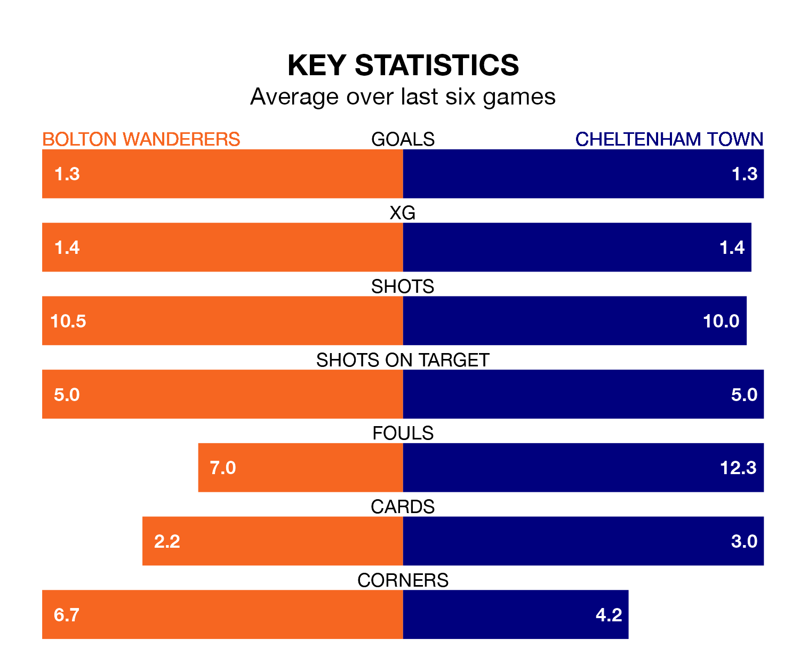

Bolton Wanderers host Cheltenham Town in Saturday's match at the University of Bolton Stadium looking to bounce back from defeat last time out in EFL League One.
Bolton, who sit second in the league after 24 games, fell to a 0-1 home defeat to Burton Albion on January 1.
They face a Cheltenham side who picked up a win in their last match, a 2-1 victory against Portsmouth, and who sit 22nd in the table.
With 45 goals in 24 games so far this season, Bolton are scoring more than average in the league with 1.9 goals per game. And they are conceding fewer than average, letting in 24 goals at a rate of 1.0 per game.
Cheltenham, meanwhile, are below average scorers, with 0.8 goals per game, compared to a league average of 1.3. They have conceded 1.4 goals per game.
With Nathan Baxter between the sticks, Wanderers can rely on one of the league's safest pair of hands. He has kept 11 clean sheets in his 24 appearances this season, and only one other 'keeper – Portsmouth's Will Norris – has been able to prevent the opposition scoring on more occasions in EFL League One.
In Town's net, Luke Southwood has five clean sheets in 25 games. He has conceded a goal every 73 minutes, 30% more often than the 98 minutes between goals for Baxter.
The home side are in reasonable form in EFL League One, with four wins and two losses from their last six games.
With three wins and a draw over that period, the Robins' form is slightly worse – they have taken 10 points from 18, compared to Bolton's 12.
In the last three years, Bolton and Cheltenham have played each other on six occasions. Bolton won three of them, Cheltenham one, and they drew twice.
On average, Bolton scored 1.5 goals and the Robins 0.8 in those matches.
Their last meeting was on August 12, when Bolton won 3-0 away.
Updated: 13:38 (UTC), 10/01/24